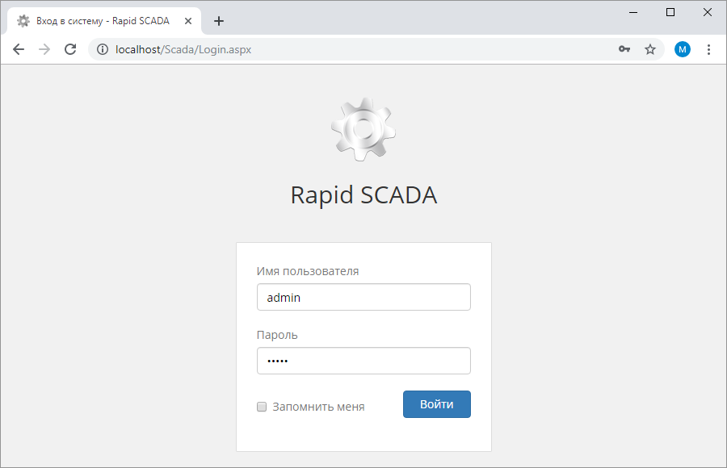
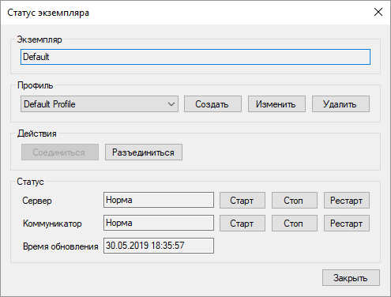
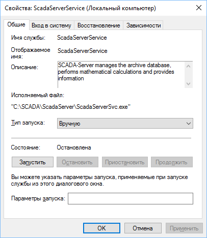

.
.После установки Rapid SCADA рекомендуется перезагрузить компьютер, чтобы автоматически запустились службы Сервера, Коммуникатора и Агента. Когда компьютер перезагрузится, запустите браузер Google Chrome, Mozilla Firefox или Microsoft Edge и введите адрес http://localhost/scada/. Должна открыться страница входа (рис. 1), на которой укажите имя пользователя admin и пароль 12345, затем нажмите кнопку Войти.

Рис. 1. Веб-форма входа в систему
Для запуска приложения Администратор используйте ярлык, расположенный в меню Пуск > Программы > SCADA. Если ярлык по какой-либо причине отсутствует, Администратор можно запустить из исполняемого файла C:\SCADA\ScadaAdmin\ScadaAdmin.exe
Приложение Администратор имеет инструменты для управления остальными приложениями Rapid SCADA.
Приложения Сервер, Коммуникатор и Агент работают как службы. При использовании Windows для управления службами можно использовать оснастку services.msc. Она запускается из командной строки или через Панель управления > Система и безопасность > Администрирование > Службы. Наименования служб: ScadaServerService, ScadaCommService и ScadaAgentService.
Кроме того, в директориях соответствующих приложений расположены файлы svc_start.bat и svc_stop.bat, которые позволяют запускать и останавливать службу. Bat-файлы необходимо запускать от имени администратора.
Приложение Администратор также позволяет запускать и останавливать Сервер и Коммуникатор. Для управления службами в Администраторе откройте проект и затем откройте форму статуса экземпляра (рис. 2) с помощью кнопки .

Рис. 2. Статус экземпляра в Администраторе
Тип запуска служб Сервера, Коммуникатора и Агента по умолчанию устанавливается автоматический, т.е. службы запускаются при старте операционной системы и останавливаются при завершении её работы. Если автозапуск не требуется, то в свойствах соответствующих служб нужно установить запуск вручную (рис. 3).

Рис. 3. Установка типа запуска службы
Чтобы открыть веб-приложение Вебстанция, в адресной строке браузера необходимо ввести http://compname/scada/, где compname - имя компьютера или IP-адрес в локальной сети, на котором установлено веб-приложение, scada – виртуальный каталог, указанный при установке. Если веб-приложение открывается на том же компьютере, на котором оно установлено, то можно использовать ссылки http://localhost/scada/ или http://127.0.0.1/scada/
Имя пользователя по умолчанию: admin
Пароль по умолчанию: 12345